TS-031: Duplicate Chloe Bennett account after Entra Connect pilot sync
Resolved a hybrid identity conflict where an existing cloud-only Chloe Bennett account did not join to the matching on-premises Active Directory identity during the Microsoft Entra Connect pilot.
Scenario
During the Microsoft Entra Connect hybrid identity pilot, Kate Jones synced successfully from on-premises Active Directory to Microsoft Entra ID. During validation, two Chloe Bennett accounts were identified: the existing production cloud account c.bennett@nietz.co.uk and a newly synced duplicate account c.bennett7067@nietzltd.onmicrosoft.com.
The target outcome was to keep the production account, remove the duplicate synced object, and allow the correct Chloe Bennett account to become the hybrid identity linked to the on-premises AD user.
ServiceNow Ticket
The incident was aligned to the affected hybrid identity service for consistent service ownership and reporting:
- Service: Identity & Access Management
- Service offering: Hybrid Identity
- Configuration item: Entra Connect
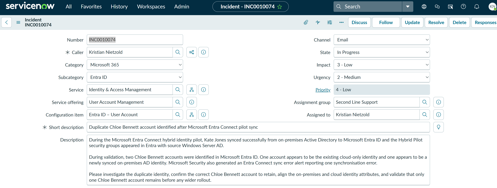
Investigation
I confirmed that two Chloe Bennett accounts existed in Microsoft Entra ID. The production account c.bennett@nietz.co.uk was still cloud-only, while the duplicate account c.bennett7067@nietzltd.onmicrosoft.com was synced from the on-premises domain.
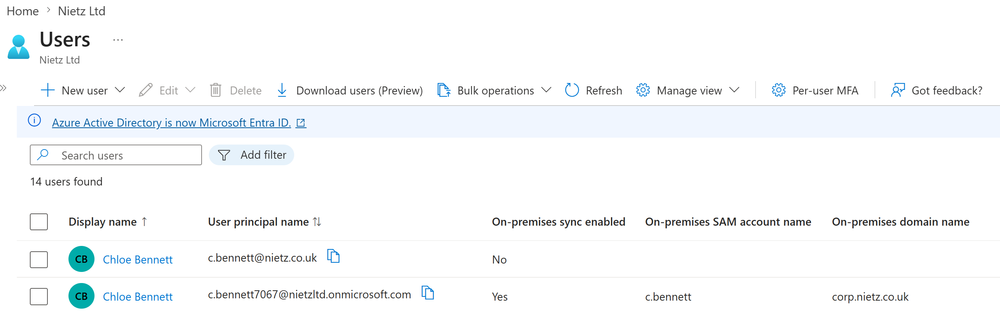
corp.nietz.co.uk.I then verified the on-premises AD account. The user logon name was already set to c.bennett@nietz.co.uk and the pre-Windows 2000 logon name was CORP\c.bennett, so the visible UPN and SAM account name were not the cause of the mismatch.
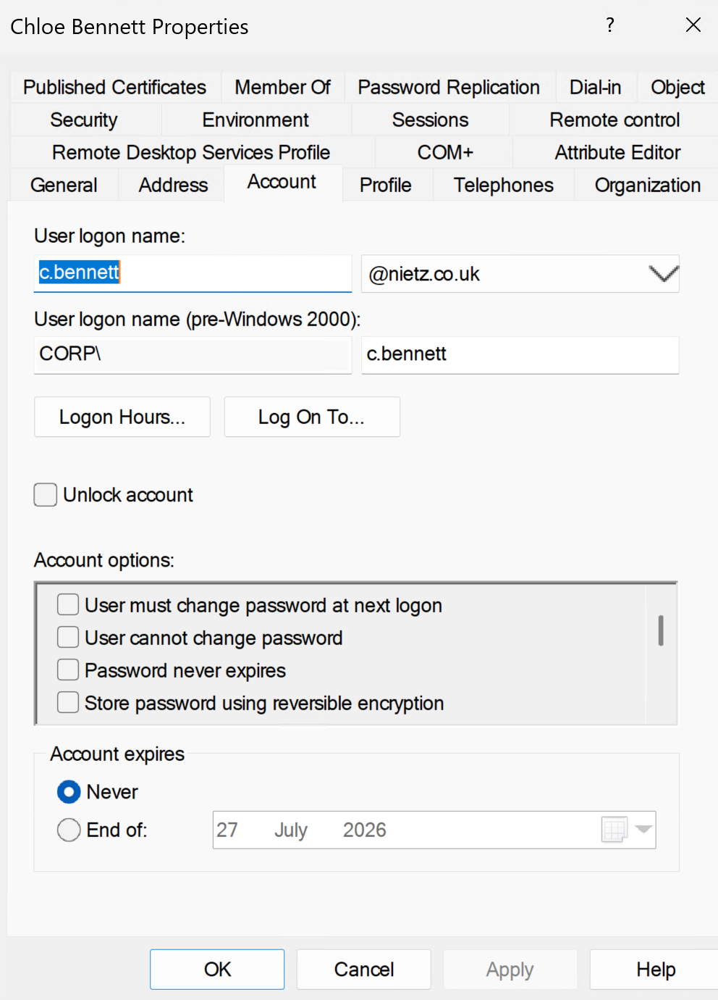
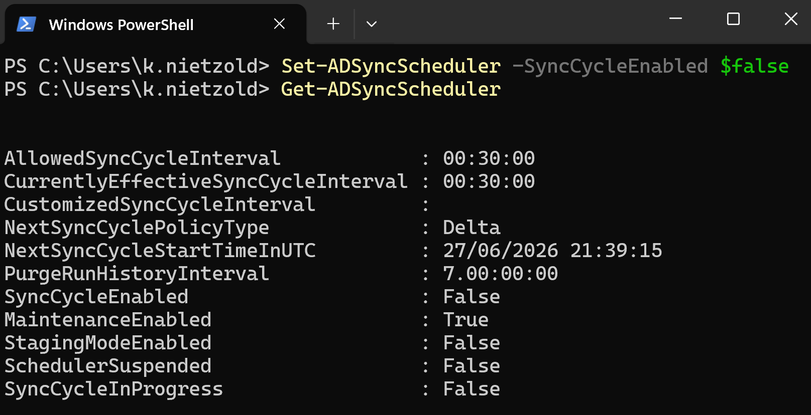
To prevent further half-finished changes while troubleshooting the hybrid identity issue, I temporarily paused the Entra Connect sync scheduler.
The key finding was that the production cloud account had Microsoft Entra administrative role assignments. Chloe Bennett had Service Support Administrator assigned directly and Helpdesk Administrator through the CLOUD_Helpdesk_UserAdmins group. That explained why the existing privileged cloud account needed to be cleaned up before attempting the soft-match again.
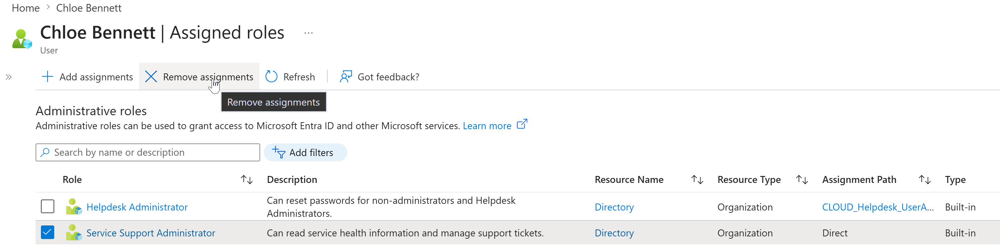
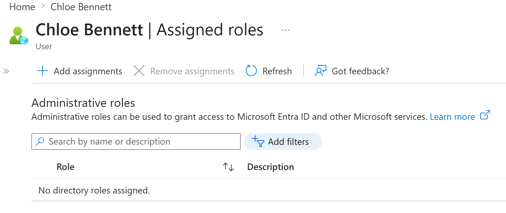
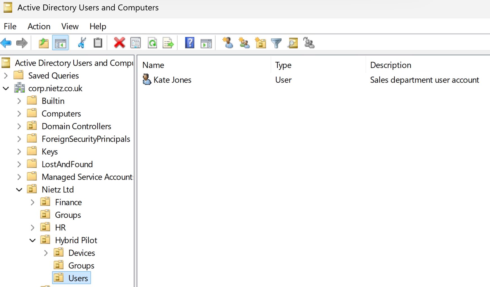
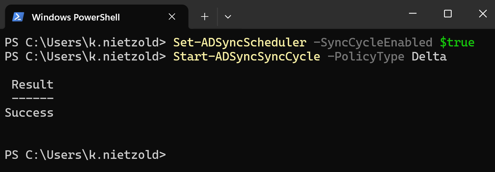
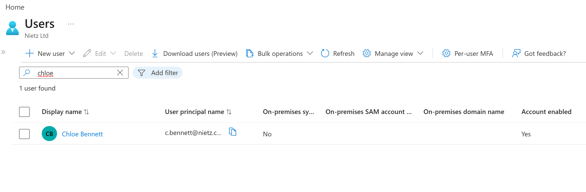
Fix Applied
I removed the administrative role assignments from the production cloud account before retrying the join. This reduced the risk of a privileged cloud-only identity being joined incorrectly while the duplicate synced object still existed.
I moved the on-premises Chloe Bennett account out of the synced Hybrid Pilot users OU. This removed the synced duplicate object from scope so Entra Connect could remove it from active users.
I re-enabled the scheduler and ran a delta sync so Entra Connect could process the scope change.
After the sync, only the production Chloe Bennett account remained in active users. The duplicate synced account had been removed from the active users list.
I then selected the deleted duplicate account for permanent deletion. This cleared the conflicting duplicate object before the on-premises Chloe Bennett account was placed back into sync scope.
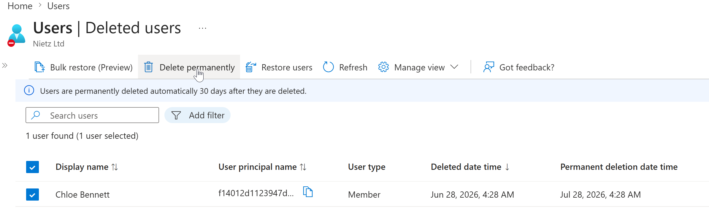
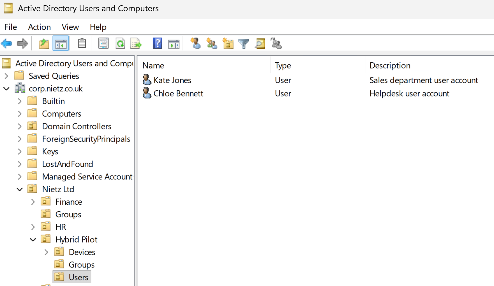
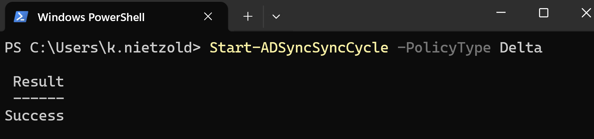
With the duplicate object removed, I moved the on-premises Chloe Bennett account back into the Hybrid Pilot users OU.
I ran another delta sync to process the corrected account state and allow the existing production cloud account to join to the on-premises AD object.
Validation
I validated the result in Microsoft Entra ID. Only one Chloe Bennett account remained, the user principal name was c.bennett@nietz.co.uk, on-premises sync was enabled, the SAM account was c.bennett, and the on-premises domain was corp.nietz.co.uk.
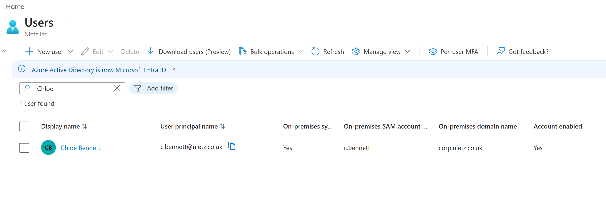
After confirming the identity issue was resolved, I restored the intended helpdesk admin group membership so the production account had the required access again.
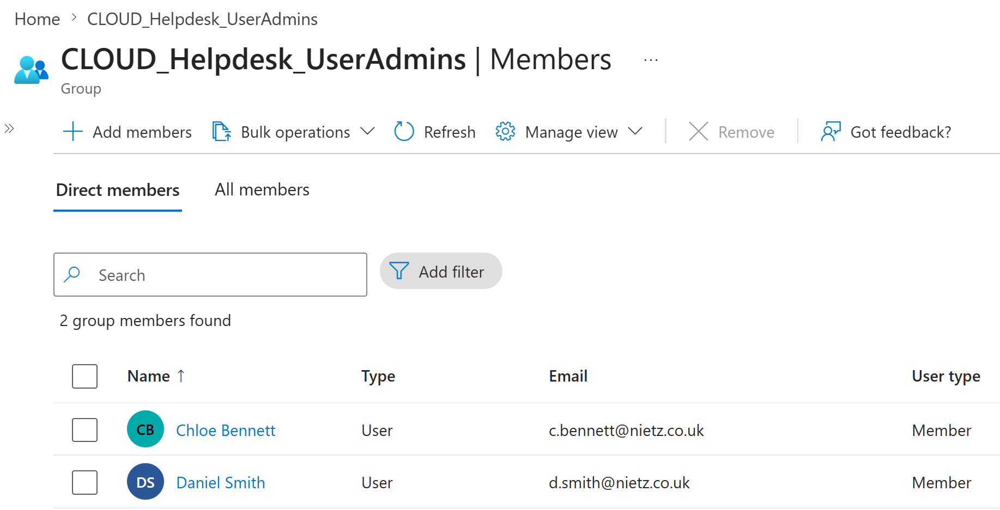
CLOUD_Helpdesk_UserAdmins group membership was restored after the identity was corrected.Resolution
The ServiceNow incident was resolved after the duplicate identity was removed, the production account was confirmed as the synchronized account, and the required group membership was restored.
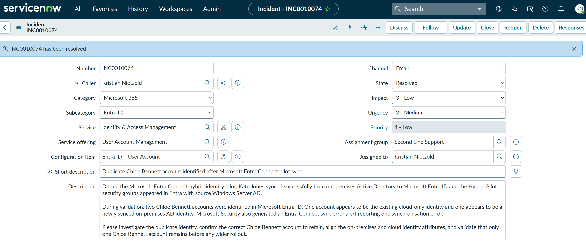
INC0010074 was resolved after the duplicate Chloe Bennett account was remediated and the production account was validated.Summary
- Resolved a P4 Low Microsoft Entra ID incident involving a duplicate Chloe Bennett account after the pilot sync.
- I confirmed the production cloud account and the duplicate synced account in Microsoft Entra ID.
- I verified the on-premises AD account UPN and SAM account name before making changes.
- I paused the Entra Connect scheduler to prevent further automatic sync changes during remediation.
- I identified administrative role assignments on the production cloud account as the key blocker to a clean soft-match.
- I removed the admin role assignments, removed the duplicate from sync scope, and cleared the deleted duplicate account.
- I moved the on-premises account back into the synced OU and ran a delta sync.
- I validated that the production account
c.bennett@nietz.co.ukbecame the synchronized identity. - I restored the intended helpdesk admin group membership and resolved the ServiceNow incident.